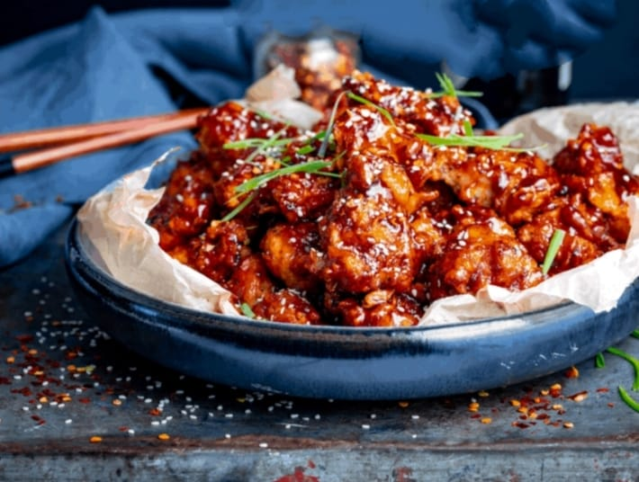
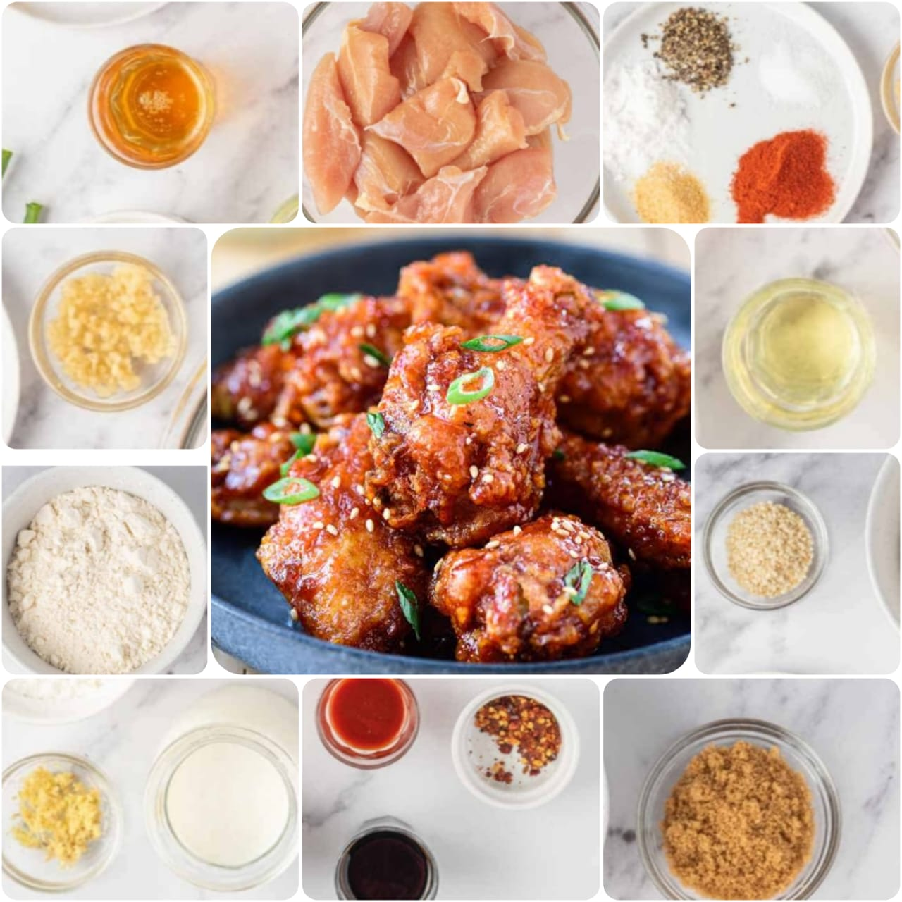

yangnyeom
Home
Korean Fried chicken, usually called chikin in Korea, refers to a variety of fried chicken dishes created in south korea, including the basic huraideu-chicken and spicy yangnyeom chicken. In South Korea, fried chicken is consumed as a meal,an appetizer, anju, or as an after-meal snack.

Ingredients
2 pounds of chicken wings
Salt
pepper
1/4 cup gochujang paste
1/2 cup of potato starch
whole wheat flour / all purpose flour
1/2 teaspoon of baking soda
2 eggs
oil
3 cloves of garlic(minced)
1/3 cup of tomato ketchup
toasted sesame seeds
1/3 cup of rice syrup
2 teaspoons of vinegar

Nutrition Facts
Calories 125
Total Fat 13.0g
Cholesterol 58mg
Sodium 520mg
Total Carbohydrate 14.0g
Vitamin C 1.4%
Vitamin A 6.3%
Procedure
Take a pan, put on the stove start heating oil.
Meanwhile until the oil gets heated take a mixing bowl put the chicken wings in it.
Add 1/2 teaspoon of salt,1/2 teaspoon of pepper, 1/2 cup potato starch, 1/4 cup whole wheat flour/all purpose flour, 1/2 teaspoon baking soda and break two eggs and add to it.
Now mix them all very well so that every piece gets properly coated with the batter.
Now put these coated pieces into heating oil and fry them well for 12 minutes by making sure the dont stick to eachother.
In this meantime make the sauce for fried chicken for it put another pan on the stove.
Put some oil into the pan add minced garlic cloves into it and stir sometime.
Add 1/3 cup of tomato ketchup, 1/3 cup of rice syrup, 2 teaspoons of vinegar, 1/4 cup of gochujang paste and stir them well.
When the bubbles start coming put a lid on the pan and leave it for sometime.
After 12 minutes take the fried chicken out and drain the excess oil for more crunchiness fry the chicken again for another 12 minutes.
After double frying the chicken wings put them into the sauce pan and mix them well.
Garnish with toasted sesame seeds and enjoy the hot served Korean Fried Chicken.
Expert Guide
Back ←
Scroll to Top ↑